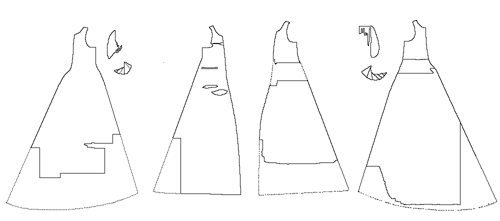

Pattern drawing based on information in Geijer
Please note that the following description is cursury, and the interested reader is highly
encouraged to seek out Geijer's text.
The Golden Gown of Queen Margareta is the gown that was reputedly worn by the 10 year old future Queen of the Kalmar Union at her wedding in 1363. The tradition linking the dress to Margareta Valdemarsdotter (1353-1412) is a long one, extending back at least to 1593 when it seems to have been referred to by an Englishman visiting Roskilde Cathedral, where Margarete is buried. In the 1620s the dress was described as Margarete's wedding dress, and in another source, as the dress she wore during her funeral procession. In 1659, Margarete's relics were moved to Uppsala, where they have remained. While there is little doubt that the dress is probably the one referred to as having been at Roskilde, there is a small question (discussed at greater length in Geijer) as to whose dress it actually was.
Based on the cut of the sleeves, and general cut of the gown, the dress probably dates from the latter half of the 14th Century, perhaps after the 1360s. Based on the length and bust of the gown, the wearer was a slender young woman or girl, probably with some slight deformity (based on the shaping of the sleeves). Radio-carbon dating, however, places the age of the fabric to about 1403-1439.
The dress was lost to history until 1906 when it was rediscovered by Agnes Branting. Her examination, made during the initial conservation in 1907/8 was published in 1911. A more significant conservation was begun in 1959/60.
This dress is made from gold fabric, a blend of gold and silk. It is made from four quarters, with no gores, and attached sleeves. From the waist up, it is lined in heavy linen. From the waist down, it is unlined.
The Fabric
Torso Material Thread Count
Warp is
Weft is
Only the upper part of the sleeves survive. The left sleeve has six gores, while the right has five.
Return to Contents
Some Clothing of the Middle Ages - Tunics - Uppsala gown, by I. Marc Carlson,
Copyright 1998 This code is given for the free exchange of information, provided the
Author's Name is included in all future revisions, and no money change hands-